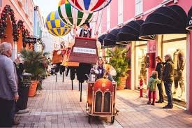
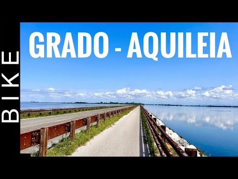
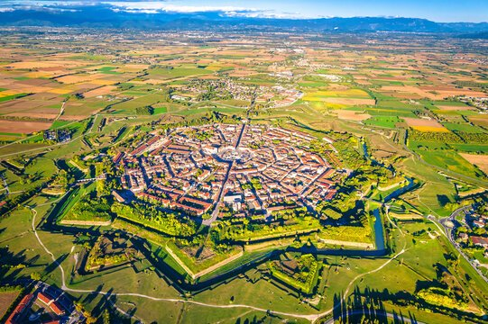

Dove Siamo
Vieni a trovarci nel cuore del Friuli Venezia Giulia
Indirizzo
Via Sinica 12, Privano - Bagnaria Arsa (UD), 33050
Orari
Ven 17:00–22:00 | Sab-Dom 11:00–22:00 | Altri giorni su prenotazione
Parcheggio
Ampio parcheggio gratuito disponibile
Nei dintorni

Palmanova Designer Village
A soli 2 km dal ristorante si trova il Palmanova Designer Village, l'outlet di riferimento del Friuli Venezia Giulia.

Pista Ciclabile Palmanova–Grado
Il ristorante si trova direttamente sulla pista ciclabile che collega Palmanova a Grado: la sosta perfetta per una pausa durante il percorso.

Centro Storico di Palmanova
A soli 2 km dal ristorante sorge Palmanova, la città stellata patrimonio UNESCO, un gioiello rinascimentale unico al mondo.
Come raggiungerci
In auto
Dall'autostrada A4 (Venezia–Trieste), uscita Palmanova. Seguire le indicazioni per Bagnaria Arsa, poi per Privano. Ampio parcheggio gratuito.
In treno
Stazione più vicina: Palmanova o Cervignano del Friuli. Da lì consigliamo di proseguire in taxi o auto a noleggio.
In aereo
Aeroporto di Trieste–Ronchi dei Legionari (ca. 30 min) o Venezia Marco Polo (ca. 1 ora). Noleggio auto disponibile in entrambi gli aeroporti.